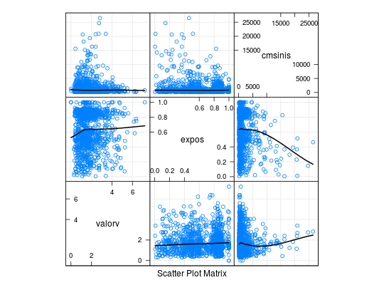

Dados de uma amostra aleatória de 996 apólices de seguros de veículos referentes ao período de 2004-2005, extraída de Jong e Heller (2008). Foram 9 variáveis observadas na amostra dentre as quais o número de sinistros e o custo total dos sinistros que são, naturalmente, as variáveis de interesse. O objetivo do estudo é relacionar o custo médio de um sinistro (razão entre o custo total e o número de sinistros) com as demais variáveis do estudo (variáveis da apólice, que compreendem informações do veículo e do principal condutor).
Um data.frame com 996 observações e 9 variáveis.
valorvexpostipovidadevsexocM masculino e F feminino.areacidadecnsiniscsinisPAULA (2004), Exercício 2.10.20, pág. 181; exercício 5.6.3, pág. 396.
De Jong, P., Heller, G. Z. (2008). Generalized linear models for insurance data (Vol. 136). Cambridge: Cambridge University Press.
data(PaulaEx2.10.20)#> Warning: data set ‘PaulaEx2.10.20’ not foundstr(PaulaEx2.10.20)#> 'data.frame': 996 obs. of 9 variables: #> $ valorv: num 1.66 1.51 0.76 1.89 4.06 1.39 2.66 0.5 1.16 3.56 ... #> $ expos : num 0.485 0.994 0.539 0.654 0.851 ... #> $ tipov : Factor w/ 11 levels "BUS","COUPE",..: 8 8 3 9 9 3 9 3 9 5 ... #> $ idadev: Factor w/ 4 levels "1","2","3","4": 3 3 3 3 2 3 1 4 4 3 ... #> $ sexoc : Factor w/ 2 levels "F","M": 2 1 2 2 2 1 1 1 1 2 ... #> $ areac : Factor w/ 6 levels "A","B","C","D",..: 2 6 3 6 6 1 6 1 2 6 ... #> $ idadec: Factor w/ 6 levels "1","2","3","4",..: 6 4 4 2 3 4 5 5 2 4 ... #> $ nsinis: int 1 1 1 2 1 1 1 1 2 1 ... #> $ csinis: num 670 807 402 1812 5434 ...# Variável de interesse - custo médio de um sinistro PaulaEx2.10.20$cmsinis <- with(PaulaEx2.10.20, csinis/nsinis) PaulaEx2.10.20 <- PaulaEx2.10.20[, -c(8:9)] # Separando as covariáveis numéricas index <- sapply(PaulaEx2.10.20, is.numeric) # Frequências dos níveis das variáveis categóricas par(mfrow = c(2, 3), las = 2, mar = c(4, 3, 3, 1)) sapply(PaulaEx2.10.20[, !index], function(x) plot(table(x)))#> $tipov #> [1] 1 2 3 4 5 6 7 8 9 10 11 #> #> $idadev #> [1] 1 2 3 4 #> #> $sexoc #> [1] 1 2 #> #> $areac #> [1] 1 2 3 4 5 6 #> #> $idadec #> [1] 1 2 3 4 5 6 #># Dispersão das variáveis numéricas library(lattice) splom(PaulaEx2.10.20[, index], type = c("p", "g", "smooth"), lwd = 2, col.line = 1)